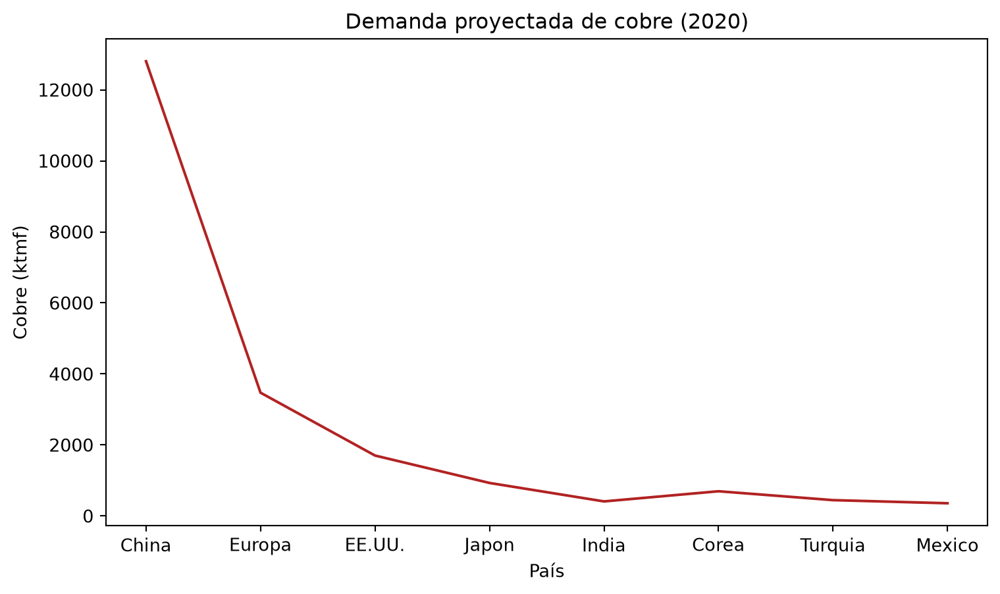
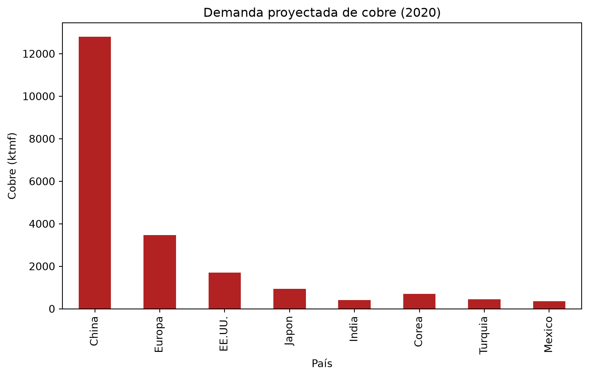
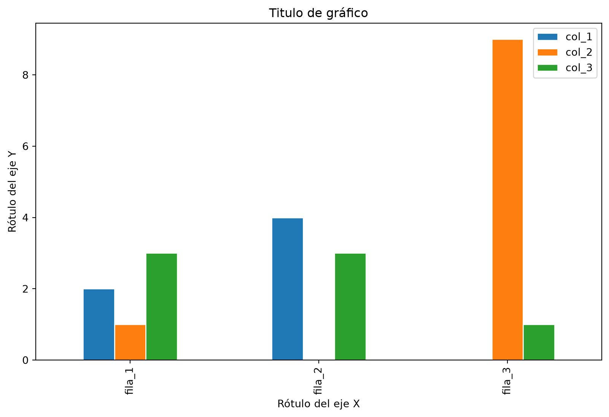

import numpy as np
import pandas as pdUna introducción rápida a Pandas
Primer recorrido por series, DataFrames, índices y selección de datos
Pandas Análisis tabular Numpy DataFrame Series Index Etiquetas Selección de datos loc[] iloc[] query() Vectorización Buenas prácticas
ImportantIdea central
En este apunte haremos una introducción rápida a Pandas: La librería más clásica del ecosistema Python para trabajar con datos tabulares. El objetivo no es agotar todos sus detalles, sino construir una primera imagen operativa de sus objetos centrales (Series, DataFrame e Index), entender cómo se seleccionan y filtran datos, y cerrar con buenas prácticas iniciales. En el apunte siguiente profundizaremos en un tema que aquí sólo aparecerá de manera transversal: Los tipos de datos.
1.1 Introducción
En las secciones anteriores, estudiamos en detalle el uso del módulo Numpy para trabajar con arreglos de datos gracias a su objeto numpy.ndarray. Ahora daremos un primer salto hacia Pandas, una librería pensada para trabajar con información tabular de manera más cómoda. Dicha librería está construida sobre Numpy, siendo una de sus grandes características la implementación de un objeto muy conocido en la ciencia de datos como pandas.DataFrame. Los DataFrames son, en esencia, estructuras tabulares bidimensionales con etiquetas o rótulos que distinguen tanto sus filas como sus columnas, y que son capaces de almacenar varios tipos de datos, incluyendo valores faltantes. También poseen una interfaz muy cómoda para usuarios familiarizados con hojas de cálculo, como las usadas típicamente en programas como MS Excel®, SPSS o Minitab.
De la misma forma que ocurre con Numpy, Pandas suele venir incluido en la instalación por defecto de muchos frameworks dedicados al análisis y ciencia de datos en Python, como Anaconda®. Sin embargo, siempre podremos hacer una instalación limpia de Pandas desde el índice de paquetes de Python como:
pip install pandasLa importación de Pandas, en la práctica, suele hacerse mediante el alias pd. De esta manera, al iniciar nuestra sesión, escribiremos:
Usaremos esta convención en todo artículo, apunte o clase de este blog.
En un nivel muy básico de entendimiento, los objetos de Pandas pueden ser pensados como versiones “mejoradas” o “generalizadas” de los arreglos de Numpy, en los cuales las filas y las columnas son identificadas con rótulos o etiquetas en vez de simples números enteros. Como veremos a lo largo de esta secuencia del blog, Pandas nos provee de una serie de herramientas, métodos y funcionalidades muy eficientes para el trabajo con este tipo de estructuras, pero casi todas ellas requieren comprender bien sus índices y sus reglas de alineamiento. Por lo tanto, en esta entrada construiremos una primera mirada práctica a tres objetos fundamentales de Pandas: pandas.Series (series), pandas.DataFrame (DataFrames) y pandas.Index (índices).
Antes de proceder, vale la pena comentar que, al igual que como lo hicimos al aprender los aspectos elementales de Numpy, jugaremos un poco con la elaboración de algunos gráficos en Matplotlib y Plotly. No será nuestro objetivo aprender a usar estas librerías en profundidad, sino simplemente apoyarnos en ellas para visualizar algunos aspectos de las estructuras de datos que estudiaremos. Por lo tanto, si no estás familiarizado con estas herramientas de visualización, no te preocupes, no son necesarias para entender los contenidos centrales de este apunte. Si quieres aprender a usarlas con más detalle, puedes revisar la sección de visualización de datos del blog.
1.2 Series
En Pandas, una serie se define como un arreglo unidimensional etiquetado que permite almacenar datos en un número arbitrario de observaciones. Sin embargo, dicho arreglo unidimensional posee dos diferencias esenciales con el típico arreglo de Numpy: dispone de un índice que permite identificar cada observación con un rótulo arbitrario (no necesariamente un número entero), y puede representar datos con tipos más flexibles que los de un arreglo homogéneo de Numpy. Una serie de Pandas puede construirse de manera rápida mediante la clase pd.Series(), la cual considera, como mínimo, un argumento denominado data, que naturalmente representa los datos a ingresar en esta estructura. Estos datos pueden ser entregados en forma de una lista de Python, un arreglo de Numpy o incluso un diccionario de Python. Por ejemplo, podemos construir una serie a partir de una lista de Python como:
# Construimos la serie a partir de una lista de Python.
data = pd.Series(data=[0.25, 0.5, 0.75, 1.0])
# Mostramos la serie en pantalla.
data0 0.25
1 0.50
2 0.75
3 1.00
dtype: float64Vemos que, al mostrar la serie en pantalla, no solamente se destacan los datos o valores que hemos ingresado, sino que además cada observación de la serie viene rotulada o indexada por un número. Este conjunto de valores que etiquetan a las observaciones es llamado índice de la serie. Su función es permitir una selección rápida y, en lo posible, sin ambigüedad de los elementos que sean de nuestro interés.
Por otro lado, también se muestra el tipo de dato que se ha almacenado en nuestra serie. En este caso, vemos que la misma está constituida por números de punto flotante de 64 bits.
Los tres elementos mencionados previamente constituyen atributos propios de una serie. De esta manera, si queremos simplemente trabajar con los valores de una serie, bastará con usar su atributo values, el cual nos retornará un arreglo unidimensional de Numpy constituido únicamente por los valores que están almacenados en la serie:
# Obtenemos los valores de la serie.
data.valuesarray([0.25, 0.5 , 0.75, 1. ])Por otro lado, el índice de la serie (en el cual profundizaremos un poco más adelante) puede individualizarse mediante el atributo index:
# Obtenemos el índice de la serie.
data.indexRangeIndex(start=0, stop=4, step=1)El índice corresponde a un objeto del tipo pd.Index, exclusivo de Pandas. En el ejemplo, tal índice es simplemente un rango de valores que va desde el 0 hasta antes del 4, con un paso igual a 1 (similar a un rango construido mediante la función np.arange(start=0, stop=4, step=1)). La selección de valores de interés en la serie se realiza por medio de este índice, de la misma forma en que lo haríamos con un arreglo unidimensional de Numpy:
# Selección individual de elementos.
data[1]np.float64(0.5)# Selección mediante slicing.
data[1:3]1 0.50
2 0.75
dtype: float64Si bien son parecidas, las series son estructuras de datos mucho más generales y flexibles que los arreglos unidimensionales de Numpy. La diferencia esencial entre ambos es, naturalmente, la presencia del objeto pd.Index: mientras que el arreglo de Numpy tiene siempre posiciones enteras implícitas que usamos para acceder selectivamente a los valores de nuestro interés, una serie de Pandas tiene un índice explícito asociado a los valores que almacena. En ese sentido, una serie se parece también a un diccionario de Python, pues mantiene una relación entre rótulos y valores.
Esta definición explícita le da a las series capacidades adicionales. Por ejemplo, el índice no debe ser necesariamente un entero, ya que podemos usar el tipo de datos que nosotros queramos para definirlo. Por ejemplo, podemos usar strings, creando la serie y usando el argumento index para construir un índice según nuestras necesidades:
# Definición explícita del índice en una serie.
data = pd.Series(
data=[0.25, 0.5, 0.75, 1.0],
index=["a", "b", "c", "d"],
)
# Mostramos la serie en pantalla.
dataa 0.25
b 0.50
c 0.75
d 1.00
dtype: float64Como cabría esperar, el acceso a los datos es conforme el índice que hemos definido:
# Seleccionamos la data conforme el índice que hemos creado.
data["b"]np.float64(0.5)Notemos que, como hemos creado una serie cuyo índice está constituido por strings, cualquier selección que explicitemos requerirá especificar dicho string entre comillas, como en el ejemplo anterior.
Al construir una serie, no estaremos en absoluto limitados por ningún criterio más que el sentido común a la hora de indexar los valores que se almacenan en ella. De este modo, si un índice está conformado por números enteros, éstos ni siquiera tienen por qué estar ordenados:
# El índice de una serie no tiene por qué seguir un orden lógico.
data = pd.Series([0.25, 0.5, 0.75, 1.0], index=[2, 5, 3, 7])
# Mostramos la serie en pantalla.
data2 0.25
5 0.50
3 0.75
7 1.00
dtype: float64Notemos que el segundo elemento almacenado en la serie se corresponde con el índice 5, y no 2. Como no hay ambigüedad, al seleccionar ese elemento, Pandas lo identificará de inmediato:
# Seleccionamos el elemento con índice 5.
data[5]np.float64(0.5)La correspondencia entre el par (índice, valor) en las series de Pandas permite formular la abstracción de que las series, además de ser versiones especializadas de los arreglos unidimensionales de Numpy, también pueden ser vistas como versiones generales de los diccionarios nativos de Python. Recordemos que los diccionarios son estructuras de datos que relacionan una llave con un valor, de tal forma que siempre que deseemos recuperar un determinado valor de un diccionario, haremos uso de su correspondiente llave. Un ejemplo de diccionario es el siguiente:
# Un diccionario con la información relativa a la producción de cobre fino (en ktmh)
# para distintas operaciones mineras en Chile (2021).
production_dict = {
"Escondida": 1011,
"Collahuasi": 630,
"El Teniente": 460,
"Los Bronces": 370,
"Los Pelambres": 336,
"Radomiro Tomic": 326,
"Chuquicamata": 319,
"Centinela": 274,
"Spence": 203,
"Sierra Gorda": 198,
"Ministro Hales": 182,
"Andina": 177,
"Candelaria": 119,
"Caserones": 110,
"Gabriela Mistral": 101,
}No existe ningún problema al convertir este diccionario en una serie por medio de la clase pd.Series(). De hecho, al hacerlo, las llaves del diccionario serán transformadas inmediatamente en los índices de la serie, mientras que los valores anexados a cada llave serán los valores anexados a cada índice de la serie resultante:
# Todo diccionario puede transformarse en una serie.
production_data = pd.Series(production_dict)
# Mostramos la serie en pantalla.
production_dataEscondida 1011
Collahuasi 630
El Teniente 460
Los Bronces 370
Los Pelambres 336
Radomiro Tomic 326
Chuquicamata 319
Centinela 274
Spence 203
Sierra Gorda 198
Ministro Hales 182
Andina 177
Candelaria 119
Caserones 110
Gabriela Mistral 101
dtype: int64Vemos pues que la serie preserva incluso el orden original en el cual fueron definidas las llaves en nuestro diccionario, además del tipo de dato que caracteriza a los valores de la misma (en este caso, números enteros).
El acceso a la información de la serie production_data es muy intuitivo. Si quisiéramos acceder a la data asociada a la producción anual (2021) de la mina Candelaria, bastará con usar el índice respectivo para consultar dicha información:
# La selección de información en series es muy intuitiva.
production_data["Candelaria"]np.int64(119)Toda selección de datos por medio de slicing debe tener en consideración el orden de los índices que definen la serie. De este modo, si queremos seleccionar la data de producción entre las minas El Teniente y Chuquicamata, bastará con que escribamos:
# El slicing también es posible, y preserva el orden original de los índices.
production_data["El Teniente": "Chuquicamata"]El Teniente 460
Los Bronces 370
Los Pelambres 336
Radomiro Tomic 326
Chuquicamata 319
dtype: int64La serie, en virtud de su estructura similar a un arreglo unidimensional (pero con mayor flexibilidad), puede ser utilizada para operar de una forma parecida a como lo haríamos con estructuras de Numpy. Sin embargo, la presencia del índice en una serie sirve como referencia para muchas de las operaciones que queramos realizar. Por lo tanto, al operar aritméticamente con dos o más series, Pandas intentará empatar los elementos que compartan el mismo índice antes de realizar el cálculo. Esto se conoce como alineamiento de índices:
# Demanda mundial de cobre refinado, proyeccion 2020 (en ktmf).
cu_dem_20 = pd.Series(
data=[12807, 3472, 1702, 930, 410, 696, 446, 358],
index=["China", "Europa", "EE.UU.", "Japon", "India", "Corea", "Turquia", "Mexico"],
)
# Demanda mundial de cobre refinado, proyeccion 2021 (en ktmf).
cu_dem_21 = pd.Series(
data=[13063, 3594, 1753, 949, 484, 706, 463, 369],
index=["China", "Europa", "EE.UU.", "Japon", "India", "Corea", "Turquia", "Mexico"],
)
# La suma de ambas series alinea los índices en ambos casos.
cu_dem_20 + cu_dem_21China 25870
Europa 7066
EE.UU. 3455
Japon 1879
India 894
Corea 1402
Turquia 909
Mexico 727
dtype: int64La serie resultante de la suma cu_dem_20 + cu_dem_21 contiene la unión de los índices que caracterizan a los datos en cu_dem_20 y cu_dem_21. Como ambas series tienen el mismo índice, éste se preserva en el resultado de la suma, y se alinea en relación a las sumas respectivas elemento a elemento.
Por otro lado, si operamos aritméticamente con series que tienen distintos índices, la serie resultante tendrá como índice a la unión de los índices de las series con las que operamos, pero sólo se tendrán resultados de la operación para los índices que aparecen en las series individuales. Para el resto de las posiciones, no se hará ningún cálculo, y Pandas rellenará esos valores con nan (que, recordemos, es la convención utilizada para representar data faltante: “Not a number”).
# Mineral transportado por camiones de una flota un día determinado.
ore_transp_1 = pd.Series(
data=[1291, 1334, 480, 851, 1180],
index=["C251", "C256", "C224", "C231", "C265"]
)
# Mineral transportado por camiones de una flota al día siguiente del anterior.
ore_transp_2 = pd.Series(
data=[251, 1291, 1332, 456, 1210],
index=["C221", "C231", "C251", "C230", "C274"]
)
# Cuando las series no tienen los mismos índices, sólo obtendremos resultados para aquellos
# que están definidos en todas las series, obteniendo un NaN como resultado en el resto de los
# índices.
ore_transp_1 + ore_transp_2C221 NaN
C224 NaN
C230 NaN
C231 2142.0
C251 2623.0
C256 NaN
C265 NaN
C274 NaN
dtype: float64Toda serie puede ser inicializada a partir de un único valor escalar. De ser el caso, el número de valores que tenga la serie será igual al número de elementos definidos en su índice al haberla construido:
# Podemos iniciar siempre una serie mediante un escalar.
scalar_series = pd.Series(data=42, index=["a", "b", "c", "d"])
# Mostramos la serie en pantalla.
scalar_seriesa 42
b 42
c 42
d 42
dtype: int64Toda serie puede “bautizarse” con un nombre, el cual permite rotular los valores de la misma. Podemos darle nombre a una serie mediante su constructor, con el argumento name:
# Podemos usar el argumento name en el constructor de una serie para rotular los datos.
s = pd.Series(
data=[5.5, 4.8, 6.3, 6.5, 6.2],
index=["P1", "P2", "P3", "P4", "P5"],
name="qualifications",
)
# Mostramos la serie en pantalla.
sP1 5.5
P2 4.8
P3 6.3
P4 6.5
P5 6.2
Name: qualifications, dtype: float64El nombre de una serie también puede definirse mediante el atributo name:
# El atributo name permite cambiar el nombre de una serie
s.name = "Notas"
# Mostramos la serie en pantalla de nuevo.
sP1 5.5
P2 4.8
P3 6.3
P4 6.5
P5 6.2
Name: Notas, dtype: float64Las series disponen además de un método plot(), que nos permite graficar los valores almacenados en ellas, considerando como etiquetas de los ejes los valores definidos por el índice respectivo de la serie. Los gráficos se construyen mediante las librerías Matplotlib y Plotly, dependiendo de la configuración que tengamos en nuestro entorno de trabajo, o bien, si deseamos una visualización estática o interactiva, respectivamente. Por ejemplo, podemos graficar la demanda mundial de cobre refinado proyectada para el año 2020, que hemos almacenado en la serie cu_dem_20, mediante su método plot(), como sigue:
# Un gráfico de líneas sencillo (notemos los argumentos del método `plot()`).
fig = cu_dem_20.plot(
kind="line",
xlabel="País",
ylabel="Cobre (ktmf)",
title="Demanda proyectada de cobre (2020)",
color="firebrick",
figsize=(9, 5),
)
Si queremos cambiar la librería de fondo usada por Pandas de Matplotlib a Plotly, basta con configurar el argumento backend="plotly" en el método plot(), como sigue:
# Un gráfico de líneas interactivo con Plotly.
# Notemos que los argumentos cambian ligeramente, pues Plotly tiene una sintaxis
# diferente a Matplotlib.
fig = cu_dem_20.plot(
backend="plotly",
kind="line",
title="Demanda proyectada de cobre (2020)",
color_discrete_sequence=["firebrick"],
height=500,
)
# Configuramos el título de los ejes.
fig.update_layout(
xaxis_title="País",
yaxis_title="Cobre (ktmf)",
)
# Mostramos el gráfico en pantalla.
fig.show()Por otro lado, si deseamos cambiar el tipo de gráfico, basta con configurar el argumento kind en el método plot(). Por ejemplo, si queremos graficar la demanda mundial de cobre refinado proyectada para el año 2020 mediante un gráfico de barras, basta con escribir:
# Un gráfico de barras sencillo.
fig = cu_dem_20.plot(
kind="bar",
xlabel="País",
ylabel="Cobre (ktmf)",
title="Demanda proyectada de cobre (2020)",
color="firebrick",
figsize=(9, 5),
)
Esto mismo es válido si queremos graficar la demanda mundial de cobre refinado proyectada para el año 2020 mediante un gráfico de barras interactivo con Plotly:
# Un gráfico de barras interactivo con Plotly.
# Insistimos: La sintaxis de Plotly es diferente.
fig = cu_dem_20.plot(
backend="plotly",
kind="bar",
title="Demanda proyectada de cobre (2020)",
color_discrete_sequence=["firebrick"],
height=500,
)
# Configuramos el título de los ejes.
fig.update_layout(
xaxis_title="País",
yaxis_title="Cobre (ktmf)",
)
# Mostramos el gráfico en pantalla.
fig.show()
Warning¡Ojo!
Si bien el método plot() de las series de Pandas es muy útil para graficar rápidamente los datos almacenados en ellas, y es recomendable su uso en combinación con Matplotlib o Plotly para obtener gráficos más personalizados, no profundizaremos mucho más en el uso de este método, ni en la personalización de gráficos con estas librerías, pues no es nuestro objetivo aprender a usar estas herramientas de visualización en profundidad. Si quieres aprender a usar Matplotlib o Plotly, puedes revisar el apunte dedicado a ellas en la sección de visualización de datos del blog, donde hablamos en detalle de ambas librerías, y de cómo construir gráficos personalizados con ellas.
1.3 DataFrames
Los DataFrames son estructuras de datos de Pandas que permiten generalizar el concepto de serie. En este contexto, un DataFrame puede entenderse como una colección de series que comparten un mismo índice de filas, donde cada serie ocupa una columna. Sin embargo, los DataFrames también cuentan con un segundo conjunto de rótulos que permite individualizar sus columnas. Por lo tanto, podemos pensar en los DataFrames como versiones especializadas de los arreglos bidimensionales de Numpy, pero con la flexibilidad de las series tanto en la identificación de filas como de columnas.
Del mismo modo que las series, los DataFrames también pueden ser pensados como diccionarios de columnas: cada llave identifica una columna, y cada valor asociado puede ser una lista, un arreglo, una serie u otra estructura compatible. En Pandas, el constructor de DataFrames corresponde a la clase pd.DataFrame(), la cual toma como mínimo un argumento denominado data, que corresponde a los valores que se almacenarán en él. También es posible definir, en forma explícita, el juego de índices tanto para las filas, con el argumento index, como para las columnas, con el argumento columns. Bastará con especificar tales índices mediante listas:
# Constructor de DataFrames.
df = pd.DataFrame(
data=np.array([[2, 1, 3], [4, 0, 3], [0, 9, 1]]),
index=["fila_1", "fila_2", "fila_3"],
columns=["col_1", "col_2", "col_3"]
)
# Mostramos el DataFrame en pantalla.
df| col_1 | col_2 | col_3 | |
|---|---|---|---|
| fila_1 | 2 | 1 | 3 |
| fila_2 | 4 | 0 | 3 |
| fila_3 | 0 | 9 | 1 |
De la misma forma que las series, los DataFrames cuentan con atributos que permiten recuperar tanto índices (index) como valores almacenados en ellos (values). Sin embargo, también cuentan con el atributo columns, que permite recuperar el juego de índices asociados a sus columnas:
# El atributo values permite recuperar los datos almacenados en un DataFrame
# (en un formato de arreglo de Numpy bidimensional).
df.valuesarray([[2, 1, 3],
[4, 0, 3],
[0, 9, 1]])# El atributo index permite recuperar el índice asociado a las filas del DataFrame.
df.indexIndex(['fila_1', 'fila_2', 'fila_3'], dtype='str')# El atributo columns permite recuperar el índice asociado a las columnas del DataFrame.
df.columnsIndex(['col_1', 'col_2', 'col_3'], dtype='str')Además de estos atributos, los DataFrames disponen de una serie de métodos que permiten inspeccionar rápidamente su estructura. Por ejemplo, shape permite recuperar el número de filas y columnas, dtypes permite observar los tipos de datos de cada columna, e info() entrega una vista resumida de columnas, valores no nulos y uso de memoria:
# Número de filas y columnas del DataFrame.
df.shape(3, 3)# Tipos de datos almacenados en cada columna.
df.dtypescol_1 int64
col_2 int64
col_3 int64
dtype: object# Resumen general del DataFrame.
df.info()<class 'pandas.DataFrame'>
Index: 3 entries, fila_1 to fila_3
Data columns (total 3 columns):
# Column Non-Null Count Dtype
--- ------ -------------- -----
0 col_1 3 non-null int64
1 col_2 3 non-null int64
2 col_3 3 non-null int64
dtypes: int64(3)
memory usage: 114.0 bytesSiempre podremos construir un DataFrame mediante su constructor, tomando como base un diccionario de columnas. El siguiente diccionario, que llamamos owners_dict, lista las empresas propietarias de las operaciones mineras detalladas en el diccionario production_dict, construido con anterioridad:
# Otro diccionario, pero esta vez de propietarios de las operaciones mineras.
owners_dict = {
"Escondida": "BHP",
"Collahuasi": "Anglo American PLC & Glencore",
"El Teniente": "Codelco",
"Los Bronces": "Anglo American PLC",
"Los Pelambres": "Antofagasta Minerals",
"Radomiro Tomic": "Codelco",
"Chuquicamata": "Codelco",
"Centinela": "Antofagasta Minerals",
"Spence": "BHP",
"Sierra Gorda": "KGHM International",
"Ministro Hales": "Codelco",
"Andina": "Codelco",
"Candelaria": "Lundin Mining",
"Caserones": "SCM Lumina Copper Chile",
"Gabriela Mistral": "Codelco",
}
# Llevamos ambos diccionarios a un DataFrame.
data = pd.DataFrame({"Produccion": production_dict, "Empresa": owners_dict})
# Mostramos el DataFrame en pantalla.
data| Produccion | Empresa | |
|---|---|---|
| Escondida | 1011 | BHP |
| Collahuasi | 630 | Anglo American PLC & Glencore |
| El Teniente | 460 | Codelco |
| Los Bronces | 370 | Anglo American PLC |
| Los Pelambres | 336 | Antofagasta Minerals |
| Radomiro Tomic | 326 | Codelco |
| Chuquicamata | 319 | Codelco |
| Centinela | 274 | Antofagasta Minerals |
| Spence | 203 | BHP |
| Sierra Gorda | 198 | KGHM International |
| Ministro Hales | 182 | Codelco |
| Andina | 177 | Codelco |
| Candelaria | 119 | Lundin Mining |
| Caserones | 110 | SCM Lumina Copper Chile |
| Gabriela Mistral | 101 | Codelco |
Notemos que la estructura de nuestro DataFrame data es equivalente a dos series unidas por el mismo índice de filas, y para las cuales cada columna es individualizada por su propio rótulo. Para todo DataFrame, podemos seleccionar cualquier columna especificando su nombre entre corchetes. El resultado de seleccionar una determinada columna de un DataFrame es que ésta será retornada como una serie:
# Las columnas pueden seleccionarse especificando su nombre entre corchetes.
data["Empresa"]Escondida BHP
Collahuasi Anglo American PLC & Glencore
El Teniente Codelco
Los Bronces Anglo American PLC
Los Pelambres Antofagasta Minerals
Radomiro Tomic Codelco
Chuquicamata Codelco
Centinela Antofagasta Minerals
Spence BHP
Sierra Gorda KGHM International
Ministro Hales Codelco
Andina Codelco
Candelaria Lundin Mining
Caserones SCM Lumina Copper Chile
Gabriela Mistral Codelco
Name: Empresa, dtype: strPodemos, igualmente, individualizar cualquier elemento de un DataFrame usando notación encadenada entre corchetes. En este esquema de selección, primero especificamos el rótulo de la columna de interés con su propio corchete, y luego el rótulo de la fila respectiva, también con su propio corchete:
# Individualización de un dato específico.
data["Empresa"]["Centinela"]'Antofagasta Minerals'El esquema de selección anterior funciona en muchos casos, pero no es el más adecuado para seleccionar ni modificar datos. Al encadenar dos selecciones, Pandas puede trabajar con una vista o con una copia intermedia, y eso puede introducir ambigüedad al momento de asignar valores. Un poco más adelante veremos esquemas más explícitos mediante .loc[] e .iloc[]. Lo que sí es muy común y recomendable es usar un único corchete para seleccionar columnas individuales de un DataFrame.
Vamos a agregar más información a nuestro DataFrame por medio de la construcción de un nuevo diccionario, en el cual especificaremos la región en la cual se ubica cada una de las operaciones mineras:
# Y otro diccionario... (esta vez, con las ubicaciones de las operaciones).
location_dict = {
"Escondida": "Antofagasta",
"Collahuasi": "Tarapaca",
"El Teniente": "Lib. Bdo. O'Higgins",
"Los Bronces": "Metropolitana",
"Los Pelambres": "Coquimbo",
"Radomiro Tomic": "Antofagasta",
"Chuquicamata": "Antofagasta",
"Centinela": "Antofagasta",
"Spence": "Antofagasta",
"Sierra Gorda": "Antofagasta",
"Ministro Hales": "Antofagasta",
"Andina": "Valparaiso",
"Candelaria": "Atacama",
"Caserones": "Atacama",
"Gabriela Mistral": "Antofagasta",
}
# Unimos todo en un DataFrame.
data = pd.DataFrame({
"Produccion": production_dict,
"Empresa": owners_dict,
"Región": location_dict
})
# Y lo mostramos en pantalla.
data| Produccion | Empresa | Región | |
|---|---|---|---|
| Escondida | 1011 | BHP | Antofagasta |
| Collahuasi | 630 | Anglo American PLC & Glencore | Tarapaca |
| El Teniente | 460 | Codelco | Lib. Bdo. O'Higgins |
| Los Bronces | 370 | Anglo American PLC | Metropolitana |
| Los Pelambres | 336 | Antofagasta Minerals | Coquimbo |
| Radomiro Tomic | 326 | Codelco | Antofagasta |
| Chuquicamata | 319 | Codelco | Antofagasta |
| Centinela | 274 | Antofagasta Minerals | Antofagasta |
| Spence | 203 | BHP | Antofagasta |
| Sierra Gorda | 198 | KGHM International | Antofagasta |
| Ministro Hales | 182 | Codelco | Antofagasta |
| Andina | 177 | Codelco | Valparaiso |
| Candelaria | 119 | Lundin Mining | Atacama |
| Caserones | 110 | SCM Lumina Copper Chile | Atacama |
| Gabriela Mistral | 101 | Codelco | Antofagasta |
Para seleccionar la información de más de una columna, bastará con especificar los nombres de tales columnas dentro de una lista, usando la misma notación entre corchetes anterior (es decir, fancy indexing). De esta manera, si queremos seleccionar la data relativa a las producciones y ubicaciones de las operaciones mineras especificadas en nuestro DataFrame, obtendremos otro DataFrame:
# Selección de más de una columna en un DataFrame.
data[["Produccion", "Región"]]| Produccion | Región | |
|---|---|---|
| Escondida | 1011 | Antofagasta |
| Collahuasi | 630 | Tarapaca |
| El Teniente | 460 | Lib. Bdo. O'Higgins |
| Los Bronces | 370 | Metropolitana |
| Los Pelambres | 336 | Coquimbo |
| Radomiro Tomic | 326 | Antofagasta |
| Chuquicamata | 319 | Antofagasta |
| Centinela | 274 | Antofagasta |
| Spence | 203 | Antofagasta |
| Sierra Gorda | 198 | Antofagasta |
| Ministro Hales | 182 | Antofagasta |
| Andina | 177 | Valparaiso |
| Candelaria | 119 | Atacama |
| Caserones | 110 | Atacama |
| Gabriela Mistral | 101 | Antofagasta |
Es importante destacar que tanto las series como los DataFrames son estructuras mutables desde la perspectiva de los datos que éstos almacenan, lo que es similar a lo que ocurre con los arreglos de Numpy. Por esta razón, podemos modificar cualquier valor en un DataFrame (o en una serie) mediante la selección de dicho valor:
# Modificamos un valor en un DataFrame mediante una selección explícita.
data.loc["El Teniente", "Región"] = "O'Higgins"
# Mostramos el DataFrame en pantalla de nuevo para verificar el cambio.
data| Produccion | Empresa | Región | |
|---|---|---|---|
| Escondida | 1011 | BHP | Antofagasta |
| Collahuasi | 630 | Anglo American PLC & Glencore | Tarapaca |
| El Teniente | 460 | Codelco | O'Higgins |
| Los Bronces | 370 | Anglo American PLC | Metropolitana |
| Los Pelambres | 336 | Antofagasta Minerals | Coquimbo |
| Radomiro Tomic | 326 | Codelco | Antofagasta |
| Chuquicamata | 319 | Codelco | Antofagasta |
| Centinela | 274 | Antofagasta Minerals | Antofagasta |
| Spence | 203 | BHP | Antofagasta |
| Sierra Gorda | 198 | KGHM International | Antofagasta |
| Ministro Hales | 182 | Codelco | Antofagasta |
| Andina | 177 | Codelco | Valparaiso |
| Candelaria | 119 | Lundin Mining | Atacama |
| Caserones | 110 | SCM Lumina Copper Chile | Atacama |
| Gabriela Mistral | 101 | Codelco | Antofagasta |
La instrucción anterior utiliza .loc[], un indexador que explicita simultáneamente la fila y la columna que queremos modificar. Esta forma es preferible a escribir asignaciones encadenadas como data["Región"]["El Teniente"] = "O'Higgins", pues ese patrón puede levantar una advertencia (SettingWithCopyWarning) cuando Pandas no puede garantizar si estamos modificando el DataFrame original o una copia intermedia. En general, cuando queramos asignar valores sobre una estructura tabular, conviene hacerlo con .loc[] o .iloc[], según corresponda.
La mutabilidad también permite construir nuevos registros para nuestro DataFrame simplemente definiéndolos:
# Creación sencilla de una nueva columna en nuestro DataFrame
# a partir de un arreglo de Numpy.
data["Porcentaje produccion Chile"] = np.array(
[
18.0, 11.2, 8.2, 6.6, 6.0, 5.8,
5.7, 4.9, 3.6, 3.5, 3.2, 3.2,
2.1, 2.0, 1.8,
],
)
# Mostramos el DataFrame en pantalla de nuevo para verificar el cambio.
data| Produccion | Empresa | Región | Porcentaje produccion Chile | |
|---|---|---|---|---|
| Escondida | 1011 | BHP | Antofagasta | 18.0 |
| Collahuasi | 630 | Anglo American PLC & Glencore | Tarapaca | 11.2 |
| El Teniente | 460 | Codelco | O'Higgins | 8.2 |
| Los Bronces | 370 | Anglo American PLC | Metropolitana | 6.6 |
| Los Pelambres | 336 | Antofagasta Minerals | Coquimbo | 6.0 |
| Radomiro Tomic | 326 | Codelco | Antofagasta | 5.8 |
| Chuquicamata | 319 | Codelco | Antofagasta | 5.7 |
| Centinela | 274 | Antofagasta Minerals | Antofagasta | 4.9 |
| Spence | 203 | BHP | Antofagasta | 3.6 |
| Sierra Gorda | 198 | KGHM International | Antofagasta | 3.5 |
| Ministro Hales | 182 | Codelco | Antofagasta | 3.2 |
| Andina | 177 | Codelco | Valparaiso | 3.2 |
| Candelaria | 119 | Lundin Mining | Atacama | 2.1 |
| Caserones | 110 | SCM Lumina Copper Chile | Atacama | 2.0 |
| Gabriela Mistral | 101 | Codelco | Antofagasta | 1.8 |
También podemos crear columnas a partir de operaciones entre columnas ya existentes. Como estas operaciones respetan los índices, Pandas mantiene la correspondencia fila a fila al calcular nuevos valores:
# Estimamos el porcentaje acumulado de producción nacional.
data["Porcentaje acumulado"] = data["Porcentaje produccion Chile"].cumsum()
# Mostramos las primeras filas para verificar la nueva columna.
data.head()| Produccion | Empresa | Región | Porcentaje produccion Chile | Porcentaje acumulado | |
|---|---|---|---|---|---|
| Escondida | 1011 | BHP | Antofagasta | 18.0 | 18.0 |
| Collahuasi | 630 | Anglo American PLC & Glencore | Tarapaca | 11.2 | 29.2 |
| El Teniente | 460 | Codelco | O'Higgins | 8.2 | 37.4 |
| Los Bronces | 370 | Anglo American PLC | Metropolitana | 6.6 | 44.0 |
| Los Pelambres | 336 | Antofagasta Minerals | Coquimbo | 6.0 | 50.0 |
En el ejemplo anterior aparece un método muy útil: cumsum(), que calcula una suma acumulada. No necesitamos escribir un ciclo for para recorrer las filas del DataFrame, porque Pandas está diseñado para trabajar de manera vectorizada sobre columnas completas.
Todo DataFrame, al igual que los arreglos bidimensionales de Numpy, puede transponerse, invirtiendo filas y columnas. Dicha transposición se logra mediante el mismo atributo que tienen tales arreglos, definido como T. Por ejemplo, para el primer DataFrame que construimos, la transposición nos da:
# Transposición de un DataFrame.
df.T| fila_1 | fila_2 | fila_3 | |
|---|---|---|---|
| col_1 | 2 | 4 | 0 |
| col_2 | 1 | 0 | 9 |
| col_3 | 3 | 3 | 1 |
En un DataFrame, podemos generar apilamientos de información mezclando los índices de filas con los índices de columnas. Esto permite transformar cualquier DataFrame en una serie multinivel (o serie jerárquicamente indexada). Para ello, usamos el método stack():
# Apilamiento de un DataFrame para construir una serie multinivel.
data_stacked = data.stack()
# Imprimimos la serie resultante en pantalla.
data_stackedEscondida Produccion 1011
Empresa BHP
Región Antofagasta
Porcentaje produccion Chile 18.0
Porcentaje acumulado 18.0
...
Gabriela Mistral Produccion 101
Empresa Codelco
Región Antofagasta
Porcentaje produccion Chile 1.8
Porcentaje acumulado 85.8
Length: 75, dtype: objectNo lo parece, pero data_stacked es efectivamente una serie. Podemos comprobarlo:
# Comprobamos que data_stacked es una serie.
type(data_stacked)pandas.SeriesEsta serie se denomina multinivel porque su índice tiene dos niveles de anidamiento, lo que nos permite seleccionar sus datos de manera jerárquica con base en las posibles combinaciones de índices que se pueden formar a partir de los índices de filas y columnas del DataFrame original:
# El índice de data_stacked es un multi-índice (o índice jerárquico).
data_stacked.indexMultiIndex([( 'Escondida', 'Produccion'),
( 'Escondida', 'Empresa'),
( 'Escondida', 'Región'),
( 'Escondida', 'Porcentaje produccion Chile'),
( 'Escondida', 'Porcentaje acumulado'),
( 'Collahuasi', 'Produccion'),
( 'Collahuasi', 'Empresa'),
( 'Collahuasi', 'Región'),
( 'Collahuasi', 'Porcentaje produccion Chile'),
( 'Collahuasi', 'Porcentaje acumulado'),
( 'El Teniente', 'Produccion'),
( 'El Teniente', 'Empresa'),
( 'El Teniente', 'Región'),
( 'El Teniente', 'Porcentaje produccion Chile'),
( 'El Teniente', 'Porcentaje acumulado'),
( 'Los Bronces', 'Produccion'),
( 'Los Bronces', 'Empresa'),
( 'Los Bronces', 'Región'),
( 'Los Bronces', 'Porcentaje produccion Chile'),
( 'Los Bronces', 'Porcentaje acumulado'),
( 'Los Pelambres', 'Produccion'),
( 'Los Pelambres', 'Empresa'),
( 'Los Pelambres', 'Región'),
( 'Los Pelambres', 'Porcentaje produccion Chile'),
( 'Los Pelambres', 'Porcentaje acumulado'),
( 'Radomiro Tomic', 'Produccion'),
( 'Radomiro Tomic', 'Empresa'),
( 'Radomiro Tomic', 'Región'),
( 'Radomiro Tomic', 'Porcentaje produccion Chile'),
( 'Radomiro Tomic', 'Porcentaje acumulado'),
( 'Chuquicamata', 'Produccion'),
( 'Chuquicamata', 'Empresa'),
( 'Chuquicamata', 'Región'),
( 'Chuquicamata', 'Porcentaje produccion Chile'),
( 'Chuquicamata', 'Porcentaje acumulado'),
( 'Centinela', 'Produccion'),
( 'Centinela', 'Empresa'),
( 'Centinela', 'Región'),
( 'Centinela', 'Porcentaje produccion Chile'),
( 'Centinela', 'Porcentaje acumulado'),
( 'Spence', 'Produccion'),
( 'Spence', 'Empresa'),
( 'Spence', 'Región'),
( 'Spence', 'Porcentaje produccion Chile'),
( 'Spence', 'Porcentaje acumulado'),
( 'Sierra Gorda', 'Produccion'),
( 'Sierra Gorda', 'Empresa'),
( 'Sierra Gorda', 'Región'),
( 'Sierra Gorda', 'Porcentaje produccion Chile'),
( 'Sierra Gorda', 'Porcentaje acumulado'),
( 'Ministro Hales', 'Produccion'),
( 'Ministro Hales', 'Empresa'),
( 'Ministro Hales', 'Región'),
( 'Ministro Hales', 'Porcentaje produccion Chile'),
( 'Ministro Hales', 'Porcentaje acumulado'),
( 'Andina', 'Produccion'),
( 'Andina', 'Empresa'),
( 'Andina', 'Región'),
( 'Andina', 'Porcentaje produccion Chile'),
( 'Andina', 'Porcentaje acumulado'),
( 'Candelaria', 'Produccion'),
( 'Candelaria', 'Empresa'),
( 'Candelaria', 'Región'),
( 'Candelaria', 'Porcentaje produccion Chile'),
( 'Candelaria', 'Porcentaje acumulado'),
( 'Caserones', 'Produccion'),
( 'Caserones', 'Empresa'),
( 'Caserones', 'Región'),
( 'Caserones', 'Porcentaje produccion Chile'),
( 'Caserones', 'Porcentaje acumulado'),
('Gabriela Mistral', 'Produccion'),
('Gabriela Mistral', 'Empresa'),
('Gabriela Mistral', 'Región'),
('Gabriela Mistral', 'Porcentaje produccion Chile'),
('Gabriela Mistral', 'Porcentaje acumulado')],
)Más adelante profundizaremos en series (y DataFrames) con este tipo de índices.
Es posible desacoplar una serie multinivel mediante el método unstack():
# Siempre podemos desacoplar una serie multinivel.
data_stacked.unstack()| Produccion | Empresa | Región | Porcentaje produccion Chile | Porcentaje acumulado | |
|---|---|---|---|---|---|
| Escondida | 1011 | BHP | Antofagasta | 18.0 | 18.0 |
| Collahuasi | 630 | Anglo American PLC & Glencore | Tarapaca | 11.2 | 29.2 |
| El Teniente | 460 | Codelco | O'Higgins | 8.2 | 37.4 |
| Los Bronces | 370 | Anglo American PLC | Metropolitana | 6.6 | 44.0 |
| Los Pelambres | 336 | Antofagasta Minerals | Coquimbo | 6.0 | 50.0 |
| Radomiro Tomic | 326 | Codelco | Antofagasta | 5.8 | 55.8 |
| Chuquicamata | 319 | Codelco | Antofagasta | 5.7 | 61.5 |
| Centinela | 274 | Antofagasta Minerals | Antofagasta | 4.9 | 66.4 |
| Spence | 203 | BHP | Antofagasta | 3.6 | 70.0 |
| Sierra Gorda | 198 | KGHM International | Antofagasta | 3.5 | 73.5 |
| Ministro Hales | 182 | Codelco | Antofagasta | 3.2 | 76.7 |
| Andina | 177 | Codelco | Valparaiso | 3.2 | 79.9 |
| Candelaria | 119 | Lundin Mining | Atacama | 2.1 | 82.0 |
| Caserones | 110 | SCM Lumina Copper Chile | Atacama | 2.0 | 84.0 |
| Gabriela Mistral | 101 | Codelco | Antofagasta | 1.8 | 85.8 |
La mayoría de los métodos de Pandas que se aplican sobre series y DataFrames retornan nuevos objetos, y no modifican la estructura original en el acto. Sin embargo, algunos métodos sí disponen de argumentos como inplace=True, o bien permiten asignar el resultado sobre el mismo nombre de variable. En general, una buena práctica es distinguir entre la estructura original y las estructuras derivadas que generamos durante un análisis. Cuando queramos manipular una estructura sin alterar la original, podemos crear una copia explícita mediante el método copy():
# El método copy() nos permite crear copias de nuestras series o DataFrames.
data_copied = data.copy()
# Mostramos la copia en pantalla.
data_copied| Produccion | Empresa | Región | Porcentaje produccion Chile | Porcentaje acumulado | |
|---|---|---|---|---|---|
| Escondida | 1011 | BHP | Antofagasta | 18.0 | 18.0 |
| Collahuasi | 630 | Anglo American PLC & Glencore | Tarapaca | 11.2 | 29.2 |
| El Teniente | 460 | Codelco | O'Higgins | 8.2 | 37.4 |
| Los Bronces | 370 | Anglo American PLC | Metropolitana | 6.6 | 44.0 |
| Los Pelambres | 336 | Antofagasta Minerals | Coquimbo | 6.0 | 50.0 |
| Radomiro Tomic | 326 | Codelco | Antofagasta | 5.8 | 55.8 |
| Chuquicamata | 319 | Codelco | Antofagasta | 5.7 | 61.5 |
| Centinela | 274 | Antofagasta Minerals | Antofagasta | 4.9 | 66.4 |
| Spence | 203 | BHP | Antofagasta | 3.6 | 70.0 |
| Sierra Gorda | 198 | KGHM International | Antofagasta | 3.5 | 73.5 |
| Ministro Hales | 182 | Codelco | Antofagasta | 3.2 | 76.7 |
| Andina | 177 | Codelco | Valparaiso | 3.2 | 79.9 |
| Candelaria | 119 | Lundin Mining | Atacama | 2.1 | 82.0 |
| Caserones | 110 | SCM Lumina Copper Chile | Atacama | 2.0 | 84.0 |
| Gabriela Mistral | 101 | Codelco | Antofagasta | 1.8 | 85.8 |
Los DataFrames también disponen de un método plot() para generar gráficos rápidos de la data contenida en ellos, apoyándonos de los juegos de índices para las filas y columnas:
# El método `plot()` también está disponible para los DataFrames.
# Como en las series, el API de graficación de Pandas se apoya,
# por defecto, en Matplotlib.
fig = df.plot(
kind="bar",
figsize=(10, 6),
title="Titulo de gráfico",
xlabel="Rótulo del eje X",
ylabel="Rótulo del eje Y",
edgecolor="white",
)
Y que también podemos usar con Plotly:
# El método `plot()` también puede usar Plotly como backend.
fig = df.plot(
backend="plotly",
kind="bar",
title="Titulo de gráfico",
height=500,
)
# Configuramos el título de los ejes.
fig.update_layout(
xaxis_title="Rótulo del eje X",
yaxis_title="Rótulo del eje Y",
barmode="group",
)
# Mostramos el gráfico en pantalla.
fig.show()
Warning¡Ojo!
De nuevo… Hemos mostrado el método plot() de los DataFrames para graficar rápidamente los datos almacenados en ellos, y es recomendable su uso en combinación con Matplotlib o Plotly para obtener gráficos más personalizados, pero no profundizaremos mucho más en el uso de este método, ya que esta secuencia está orientada fundamentalmente al análisis de datos.
1.4 Índices
Hemos visto que tanto las series como los DataFrames contienen índices explícitos que permiten referenciar nuestros datos. En Pandas, un índice no es simplemente una decoración visual: corresponde a una entidad independiente representada por medio del objeto pd.Index. Tal objeto es una estructura interesante en sí misma, y puede ser entendida tanto como un arreglo inmutable como una estructura cercana a un conjunto ordenado. Esta segunda analogía debe tomarse con cuidado, porque pd.Index puede contener elementos repetidos, pero sigue siendo útil para entender operaciones como uniones, intersecciones y diferencias.
# Definimos una lista con enteros.
idx = [2 * j for j in range(5)]
# Construimos un índice a partir de la lista anterior.
index = pd.Index(idx)
# Mostramos este objeto en pantalla.
indexIndex([0, 2, 4, 6, 8], dtype='int64')Vemos que Pandas nos indica que el índice que hemos creado está compuesto por números enteros. Según la versión instalada, este objeto puede mostrarse como un Index con tipo entero, o como una clase especializada de índice entero. Un índice de Pandas tiene algunas similitudes con los arreglos de NumPy, ya que podemos seleccionar cualquier elemento del mismo especificando la posición de dicho elemento entre corchetes, o bien recuperar un subconjunto de elementos del índice por medio de slicing:
# Selección de un elemento del índice.
index[1]np.int64(2)# Selección de varios elementos del índice.
index[::2]Index([0, 4, 8], dtype='int64')Los índices, además, también tienen ciertos atributos que son heredados de los arreglos de NumPy:
# Número de elementos del índice.
index.size5# Tipo de dato del índice.
index.dtypedtype('int64')# Número de dimensiones del índice.
index.ndim1# Geometría del índice.
index.shape(5,)Sin embargo, los índices son objetos inmutables; si queremos cambiar un valor de un índice mediante simple selección, Python nos levantará una excepción (TypeError):
# Intentamos modificar un valor del índice (esto no es posible, pues los índices son inmutables).
try:
index[1] = 0
except TypeError as e:
print(e)Index does not support mutable operationsEsta inmutabilidad hace más seguro compartir índices entre múltiples series o DataFrames, evitando problemas derivados de modificaciones accidentales. Si queremos cambiar las etiquetas de un índice, lo habitual no es modificar una posición individual del índice, sino crear un nuevo índice o usar métodos como rename(), set_index() o reset_index(), dependiendo del caso.
# Podemos reemplazar el índice completo por otro índice compatible.
renamed_df = df.copy()
renamed_df.index = ["muestra_1", "muestra_2", "muestra_3"]
# Mostramos el nuevo DataFrame.
renamed_df| col_1 | col_2 | col_3 | |
|---|---|---|---|
| muestra_1 | 2 | 1 | 3 |
| muestra_2 | 4 | 0 | 3 |
| muestra_3 | 0 | 9 | 1 |
Los índices también pueden tener un nombre, lo cual ayuda a documentar qué representa cada fila. Esto es especialmente útil cuando luego exportamos una tabla, la apilamos, la combinamos con otra, o la usamos en gráficos:
# Nombramos los índices de filas y columnas.
df_named = df.copy()
df_named.index.name = "muestra"
df_named.columns.name = "variable"
# Mostramos el DataFrame con nombres en sus ejes.
df_named| variable | col_1 | col_2 | col_3 |
|---|---|---|---|
| muestra | |||
| fila_1 | 2 | 1 | 3 |
| fila_2 | 4 | 0 | 3 |
| fila_3 | 0 | 9 | 1 |
Los índices también se comportan como conjuntos de Python. Recordemos que los conjuntos, tal y como su nombre lo indica (set), son objetos nativos de Python que permiten operar algebraicamente con sus elementos mediante el uso de operaciones típicas de ese tipo de objetos, tales como uniones, intersecciones, complementos, entre otras. De esta manera, si definimos otro índice:
# Construimos otro índice, esta vez con números impares.
index_2 = pd.Index([2 * j + 1 for j in range(5)])
# Y lo mostramos en pantalla.
index_2Index([1, 3, 5, 7, 9], dtype='int64')Podemos unir ambos índices previamente construidos mediante el método union():
# Unión de índices.
index.union(index_2)Index([0, 1, 2, 3, 4, 5, 6, 7, 8, 9], dtype='int64')También podemos obtener su intersección mediante el método intersection():
# Intersección de índices.
index.intersection(index_2)Index([], dtype='int64')Y su diferencia mediante el método difference():
# Diferencia de índices.
index.difference(index_2)Index([0, 2, 4, 6, 8], dtype='int64')Las operaciones con índices siguen una lógica cercana al álgebra de conjuntos, y por lo tanto el resultado de cada operación dependerá de los elementos que componen a cada índice. La razón de esto es simple: los índices permiten a las series y DataFrames de Pandas alinear sus datos para operar con ellos. Por esta razón, el resultado de cualquier operación entre estructuras de datos dependerá no sólo de sus valores, sino también de sus etiquetas.
Esta idea es una de las características más poderosas de Pandas. En la práctica, permite que al sumar, comparar, combinar o filtrar datos, Pandas use los rótulos como referencia semántica, y no solamente la posición física de cada valor en memoria. Esto es especialmente importante cuando trabajamos con datos reales, donde el orden de las filas puede cambiar, algunas observaciones pueden faltar y distintas fuentes pueden contener subconjuntos diferentes de entidades.
1.5 Selección de datos
Cuando aprendimos a trabajar con los arreglos de Numpy, discutimos en detalle métodos y herramientas para seleccionar, asignar y modificar valores de dichos arreglos, incluyendo esquemas de indexación simple (por ejemplo, x[2, 1]), slicing (por ejemplo, x[:1, :5]), masking (por ejemplo, x[x >= 0]), fancy indexing (por ejemplo, x[0, [1, 5]]), y combinaciones de todos ellos. A continuación, estudiaremos métodos similares para poder modificar y acceder a los valores que constituyen las estructuras de datos básicas de Pandas: Series y DataFrames. La indexación sobre objetos de Pandas se sentirá muy familiar, luego de haber aprendido a ejecutar estas mismas operaciones sobre arreglos de Numpy.
Partiremos con el caso más sencillo, que corresponde a la selección de datos en series. Como ya vimos un poco más atrás, las series actúan en muchas facetas como arreglos unidimensionales, y en otras, como diccionarios de Python. Con ambas analogías en mente, podremos entender sin demasiado problema cómo indexar elementos de una serie.
Como en el caso de un diccionario, la serie nos provee de una forma de mapeo de tipo (índice, valor), similar al que haríamos al tratar de mapear valores en un diccionario a partir de sus llaves. Por ejemplo:
# Construimos una serie para jugar con ella.
data = pd.Series(data=[0.25, 0.5, 0.75, 1.0], index=["a", "b", "c", "d"])
# Mostramos la serie en pantalla.
dataa 0.25
b 0.50
c 0.75
d 1.00
dtype: float64# Selección directa de un elemento de una serie.
data["b"]np.float64(0.5)Las series, al ser parcialmente mutables, pueden ser modificadas mediante una sintaxis típica de diccionarios (tal y como hicimos previamente con los DataFrames). De la misma forma en que generalmente extendemos la longitud de un diccionario mediante la asignación de una nueva llave, podemos extender una serie mediante la asignación de un índice nuevo, como sigue:
# Agregamos un valor nuevo a la serie por simple asignación.
data["e"] = 1.25
# Mostramos la serie en pantalla de nuevo para verificar el cambio.
dataa 0.25
b 0.50
c 0.75
d 1.00
e 1.25
dtype: float64Esta sencilla mutabilidad de los objetos constituye una característica muy conveniente: Bajo toda esta sencillez, Pandas está tomando decisiones respecto de la distribución de memoria y copia de datos que podrían tener lugar en operaciones así. De este modo, Pandas asume que el usuario, en general, no debería perder su tiempo en cuestiones de esta naturaleza (aunque podríamos, ciertamente).
Podemos aprovechar la similitud de una serie a un arreglo unidimensional y aplicar las mismas operaciones de selección que aprendimos para esas estructuras de datos. Por ejemplo:
# Slicing explicitando los índices.
data["a": "c"]a 0.25
b 0.50
c 0.75
dtype: float64# Los índices no tienen por qué ser especificados en forma explícita.
data[0: 3]a 0.25
b 0.50
c 0.75
dtype: float64# Podemos realizar filtros mediante masking.
data[(data > 0.3) & (data < 0.8)]b 0.50
c 0.75
dtype: float64# Y también fancy indexing.
data[["a", "e"]]a 0.25
e 1.25
dtype: float64Los esquemas de selección de Pandas que se parecen a los de Numpy son intuitivos, pero también pueden ser una fuente de confusión. Miremos el caso de la selección por medio de slicing: en los arreglos de Numpy, la posición final de un slice se excluye del resultado. En Pandas, en cambio, un slice basado en etiquetas suele incluir la etiqueta final, mientras que un slice basado en posiciones sigue la convención de Python y excluye la posición final. Esta diferencia puede llevar a confusión, especialmente cuando el índice está formado por números enteros.
1.5.1 Esquemas de indexación
En general, Pandas presenta comportamientos por defecto diferentes dependiendo del tipo de selección que se quiera realizar sobre una serie o un DataFrame. Por ejemplo, si una serie tiene un índice entero explícito, una operación de indexado como data[1] usará los índices explícitos, mientras que una operación de slicing como data[1: 3] usará índices implícitos, como si se tratara de un arreglo o una lista de Python:
# Creamos una nueva serie.
data = pd.Series(data=["a", "b", "c"], index=[1, 3, 5])
# Mostramos la serie en pantalla.
data1 a
3 b
5 c
dtype: str# Selección simple con índice explícito.
data[1]'a'# Selección por slicing con índice implícito.
data[1: 3]3 b
5 c
dtype: strA causa de esta potencial confusión en el caso de los índices enteros, Pandas nos provee de indexadores que explicitan el esquema de selección de una serie o de un DataFrame. No son métodos en el sentido usual, sino interfaces de indexación: .loc[] trabaja con etiquetas, mientras que .iloc[] trabaja con posiciones enteras.
Tanto las series como los DataFrames, como hemos visto previamente, admiten selecciones de datos mediante el uso de corchetes. Por defecto, los DataFrames permiten seleccionar columnas escribiendo data["columna_j"]. También podríamos encadenar una segunda selección, como data["columna_j"]["fila_i"], pero esta forma puede llevar a ambigüedades y no es la opción preferida para escribir código claro.
Afortunadamente, dadas todas estas posibles ambigüedades, podemos seleccionar datos siguiendo un esquema diferente. Existen dos indexadores fundamentales: .loc[], que selecciona mediante etiquetas, e .iloc[], que selecciona mediante posiciones enteras. El primer indexador es .loc[], que nos dejará seleccionar información de una serie o DataFrame explicitando el o los rótulos respectivos:
# Indexamos de manera explícita una serie mediante .loc[].
data.loc[1]'a'# Slicing usando este esquema de indexación.
data.loc[1: 3]1 a
3 b
dtype: strEste esquema de indexación, en el caso de un DataFrame, permite seleccionar información conforme un esquema que nos es familiar desde Numpy: explicitando primero la fila, y luego la columna respectiva. De esta manera, dicho esquema es del tipo data.loc["fila_i", "columna_j"]:
# Creamos un DataFrame para probar los esquemas de indexación.
df = pd.DataFrame({
"Produccion": production_dict,
"Empresa": owners_dict,
"Region": location_dict
})
# Mostramos el DataFrame en pantalla.
df| Produccion | Empresa | Region | |
|---|---|---|---|
| Escondida | 1011 | BHP | Antofagasta |
| Collahuasi | 630 | Anglo American PLC & Glencore | Tarapaca |
| El Teniente | 460 | Codelco | Lib. Bdo. O'Higgins |
| Los Bronces | 370 | Anglo American PLC | Metropolitana |
| Los Pelambres | 336 | Antofagasta Minerals | Coquimbo |
| Radomiro Tomic | 326 | Codelco | Antofagasta |
| Chuquicamata | 319 | Codelco | Antofagasta |
| Centinela | 274 | Antofagasta Minerals | Antofagasta |
| Spence | 203 | BHP | Antofagasta |
| Sierra Gorda | 198 | KGHM International | Antofagasta |
| Ministro Hales | 182 | Codelco | Antofagasta |
| Andina | 177 | Codelco | Valparaiso |
| Candelaria | 119 | Lundin Mining | Atacama |
| Caserones | 110 | SCM Lumina Copper Chile | Atacama |
| Gabriela Mistral | 101 | Codelco | Antofagasta |
El esquema de indexación por medio de loc[] en un DataFrame sigue el orden (fila, columna) al seleccionar información:
# Seleccionamos información de una fila y columna específica.
df.loc["Chuquicamata", "Produccion"]np.int64(319)Esto también es válido para cualquier tipo de slicing, masking o fancy indexing:
# El slicing con .loc[] usa etiquetas e incluye el extremo final.
df.loc["Radomiro Tomic": "Sierra Gorda", "Produccion": "Empresa"]| Produccion | Empresa | |
|---|---|---|
| Radomiro Tomic | 326 | Codelco |
| Chuquicamata | 319 | Codelco |
| Centinela | 274 | Antofagasta Minerals |
| Spence | 203 | BHP |
| Sierra Gorda | 198 | KGHM International |
# Mediante masking, podemos construir filtros sencillos para nuestras selecciones.
df.loc[df["Produccion"] >= 200]| Produccion | Empresa | Region | |
|---|---|---|---|
| Escondida | 1011 | BHP | Antofagasta |
| Collahuasi | 630 | Anglo American PLC & Glencore | Tarapaca |
| El Teniente | 460 | Codelco | Lib. Bdo. O'Higgins |
| Los Bronces | 370 | Anglo American PLC | Metropolitana |
| Los Pelambres | 336 | Antofagasta Minerals | Coquimbo |
| Radomiro Tomic | 326 | Codelco | Antofagasta |
| Chuquicamata | 319 | Codelco | Antofagasta |
| Centinela | 274 | Antofagasta Minerals | Antofagasta |
| Spence | 203 | BHP | Antofagasta |
# Y estos filtros pueden ser respecto de cualquier combinación de filas y/o columnas.
df.loc[(df["Produccion"] >= 200) & (df["Region"] == "Antofagasta")]| Produccion | Empresa | Region | |
|---|---|---|---|
| Escondida | 1011 | BHP | Antofagasta |
| Radomiro Tomic | 326 | Codelco | Antofagasta |
| Chuquicamata | 319 | Codelco | Antofagasta |
| Centinela | 274 | Antofagasta Minerals | Antofagasta |
| Spence | 203 | BHP | Antofagasta |
# Mediante fancy indexing podemos especificar ciertas filas o columnas.
df.loc[["El Teniente", "Chuquicamata", "Radomiro Tomic", "Andina"], ["Produccion", "Region"]]| Produccion | Region | |
|---|---|---|
| El Teniente | 460 | Lib. Bdo. O'Higgins |
| Chuquicamata | 319 | Antofagasta |
| Radomiro Tomic | 326 | Antofagasta |
| Andina | 177 | Valparaiso |
Por otro lado, también disponemos de un esquema de indexación que prescinde de las etiquetas de una serie o DataFrame, tratando a estas estructuras de datos como si fueran arreglos unidimensionales o bidimensionales de Numpy, según sea el caso. Tal esquema se genera por medio del indexador .iloc[]:
# .iloc[] nos permite tratar a cualquier serie como un arreglo unidimensional
# cuando seleccionamos información.
data.iloc[1]'b'# Selección de la última posición de una serie.
data.iloc[-1]'c'# Selección de la última fila de un DataFrame.
df.iloc[-1, :]Produccion 101
Empresa Codelco
Region Antofagasta
Name: Gabriela Mistral, dtype: objectComo regla práctica, si estamos pensando en nombres de filas o columnas, usamos .loc[]. Si estamos pensando en posiciones, usamos .iloc[]. Esta distinción evita buena parte de las confusiones comunes al comenzar a trabajar con Pandas.
1.5.2 Convenciones de orden
Existen algunas convenciones adicionales de indexación que podrían parecer extrañas en primera instancia, pero que, de todas maneras, pueden llegar a ser extremadamente útiles en la práctica. Tales convenciones son especialmente relevantes cuando tratamos con DataFrames.
En un DataFrame, el esquema de selección por defecto al rotular entre corchetes (sin usar indexadores como loc[] o iloc[]) siempre aplica por defecto sobre los índices relativos a las columnas. De esta manera, si escribimos df["col_j"], Pandas entenderá que estamos buscando la columna llamada "col_j" en el DataFrame df. En efecto:
# Al escribir un nombre entre corchetes luego del nombre de un DataFrame,
# Pandas siempre asumirá que estamos buscando una determinada columna en
# dicho DataFrame.
df["Produccion"]Escondida 1011
Collahuasi 630
El Teniente 460
Los Bronces 370
Los Pelambres 336
Radomiro Tomic 326
Chuquicamata 319
Centinela 274
Spence 203
Sierra Gorda 198
Ministro Hales 182
Andina 177
Candelaria 119
Caserones 110
Gabriela Mistral 101
Name: Produccion, dtype: int64Por lo tanto, si buscamos una determinada fila en un DataFrame, siempre tendremos que usar algún indexador:
# En un DataFrame, si queremos seleccionar una fila, tendremos que usar un indexador.
df.loc["Los Pelambres"]Produccion 336
Empresa Antofagasta Minerals
Region Coquimbo
Name: Los Pelambres, dtype: objectAl contrario de lo que ocurre con la simple selección, al realizar un slicing entre corchetes sin especificar un indexador, Pandas siempre entenderá que dicha búsqueda se hará con respecto a las filas del DataFrame:
# En el slicing, si no usamos indexadores, Pandas entiende que siempre barremos por
# filas.
df["Los Bronces": "Centinela"]| Produccion | Empresa | Region | |
|---|---|---|---|
| Los Bronces | 370 | Anglo American PLC | Metropolitana |
| Los Pelambres | 336 | Antofagasta Minerals | Coquimbo |
| Radomiro Tomic | 326 | Codelco | Antofagasta |
| Chuquicamata | 319 | Codelco | Antofagasta |
| Centinela | 274 | Antofagasta Minerals | Antofagasta |
Por lo tanto, si queremos generar un slicing en un DataFrame con respecto a las columnas, nuevamente, tendremos que hacer uso de algún indexador:
# Para realizar un slicing en un DataFrame con referencia a sus índices de columnas, necesitamos
# usar un indexador.
df.loc[:, :"Empresa"]| Produccion | Empresa | |
|---|---|---|
| Escondida | 1011 | BHP |
| Collahuasi | 630 | Anglo American PLC & Glencore |
| El Teniente | 460 | Codelco |
| Los Bronces | 370 | Anglo American PLC |
| Los Pelambres | 336 | Antofagasta Minerals |
| Radomiro Tomic | 326 | Codelco |
| Chuquicamata | 319 | Codelco |
| Centinela | 274 | Antofagasta Minerals |
| Spence | 203 | BHP |
| Sierra Gorda | 198 | KGHM International |
| Ministro Hales | 182 | Codelco |
| Andina | 177 | Codelco |
| Candelaria | 119 | Lundin Mining |
| Caserones | 110 | SCM Lumina Copper Chile |
| Gabriela Mistral | 101 | Codelco |
Las convenciones anteriores para el caso de la selección y del slicing en DataFrames no llevan un nombre específico, pero sin duda son útiles para entender cómo Pandas trabaja por defecto sobre sus estructuras de datos si optamos por no especificar una forma de indexar al seleccionar información.
1.5.3 Filtrado
Una tarea importante al trabajar con series o DataFrames, y que se desprende de cualquier análisis de datos, corresponde al filtrado de información conforme algún criterio. En las estructuras de datos de Pandas, una primera forma de filtrar información es mediante el uso de masking, de la misma forma que lo haríamos en arreglos de Numpy. Ya hemos visto ejemplos de esto previamente, pero ahora lo explicaremos más en detalle.
Partamos pues construyendo un DataFrame (para las series, las operaciones de filtrado son totalmente análogas), el cual tendrá un total de 100 filas y 3 columnas. Cada fila corresponderá a un día determinado de observaciones sobre una planta de chancado primario. La primera columna corresponderá al procesamiento de mineral en el chancador (en toneladas/hora o tph), la segunda, a la utilización efectiva promedio de la flota de transporte de la mina respectiva, y la tercera, a la fracción porcentual de mineral de tamaño grueso (+1’’) que llega a la planta, estando todas estas mediciones referenciadas al día en cuestión. Usaremos el generador de números aleatorios de Numpy para construir este DataFrame:
# Definimos una semilla para el generador de números aleatorios de Numpy.
rng = np.random.default_rng(42)
# Tratamiento de chancado primario.
x1 = rng.normal(loc=3200, scale=580, size=100)
# Utilización efectiva de flota CAEX.
x2 = rng.lognormal(mean=4, sigma=0.2, size=100)
# Proporción de mineral grueso (+1").
x3 = rng.normal(loc=30, scale=12.5, size=100)
# Construimos un DataFrame con esta información.
ch1_df = pd.DataFrame(
data=np.array([x1, x2, x3]).T,
columns=["Tratamiento CH1", "UE CAEX", "% Gruesos"]
)Debido a que el DataFrame que hemos construido tiene un total de 100 filas, sería un despropósito imprimirlo completamente en pantalla. Sin embargo, podemos usar el método head() para mostrar las primeras filas de nuestro DataFrame, a fin de revisar someramente su estructura. El método head() toma como argumento un número entero n, el cual indica la cantidad de filas que se mostrarán desde el inicio del DataFrame. Por ejemplo, para mostrar las primeras 5 filas de nuestro DataFrame (que es la opción por defecto), haríamos lo siguiente:
# Mostramos las primeras filas de nuestro DataFrame.
ch1_df.head(n=5)| Tratamiento CH1 | UE CAEX | % Gruesos | |
|---|---|---|---|
| 0 | 3376.735906 | 50.621050 | 34.219682 |
| 1 | 2596.809218 | 70.799055 | 47.593523 |
| 2 | 3635.261694 | 50.843242 | 31.132311 |
| 3 | 3745.527536 | 63.275810 | 38.049235 |
| 4 | 2068.399591 | 45.298615 | 4.372849 |
El método tail(), por otro lado, nos permite mostrar las últimas filas de un DataFrame, tomando el mismo argumento n para indicar la cantidad de filas a mostrar desde el final del DataFrame. Por ejemplo, para mostrar las últimas 5 filas de nuestro DataFrame (que también es la opción por defecto), haríamos lo siguiente:
# Mostramos las últimas filas de nuestro DataFrame.
ch1_df.tail(n=5)| Tratamiento CH1 | UE CAEX | % Gruesos | |
|---|---|---|---|
| 95 | 2360.674766 | 45.652328 | 32.206405 |
| 96 | 2432.834225 | 62.094993 | 33.699925 |
| 97 | 2621.596840 | 50.454855 | 25.351068 |
| 98 | 3431.869051 | 54.542250 | 8.040978 |
| 99 | 2674.822148 | 52.842269 | 34.099944 |
Un primer filtro de información que podemos querer observar en nuestro DataFrame es verificar cuáles son los registros tales que el tratamiento de chancado primario fue mayor a 3700 tph. Dicho filtro es sencillo de construir, ya que sólo requiere de una simple operación de masking:
# Seleccionamos aquellas filas (o días) con tratamiento sobre 3700 tph.
ch1_df[ch1_df["Tratamiento CH1"] > 3700]| Tratamiento CH1 | UE CAEX | % Gruesos | |
|---|---|---|---|
| 3 | 3745.527536 | 63.275810 | 38.049235 |
| 10 | 3710.050825 | 59.554075 | 41.448782 |
| 13 | 3853.799900 | 40.886030 | 23.947882 |
| 18 | 3709.501175 | 75.215384 | 28.068679 |
| 22 | 3909.073976 | 57.054066 | 32.207167 |
| 30 | 4442.155609 | 50.503268 | 11.706975 |
| 35 | 3854.803930 | 44.562121 | 21.823169 |
| 46 | 3705.428691 | 48.307201 | 16.290180 |
| 57 | 4067.065961 | 66.456520 | 25.298049 |
| 59 | 3761.601446 | 43.077949 | 12.813802 |
El filtro anterior entrega como resultado un DataFrame con todas las filas del original tales que el tratamiento de chancado primario (la primera columna) es mayor que 3700 tph. Por supuesto, quizás la propia columna de tratamiento puede ser innecesaria en esta consulta de información, y queramos únicamente retener los valores del % de gruesos y de utilización efectiva de la flota de transporte tales que el tratamiento es mayor a 3700 tph. Para hacer esto, podemos combinar la máscara anterior con .loc[], listando las columnas que queremos obtener:
# Tratamiento sobre 3700 tph, retornamos columnas de utilización efectiva
# y % de gruesos.
ch1_df.loc[
ch1_df["Tratamiento CH1"] > 3700,
["UE CAEX", "% Gruesos"]
]| UE CAEX | % Gruesos | |
|---|---|---|
| 3 | 63.275810 | 38.049235 |
| 10 | 59.554075 | 41.448782 |
| 13 | 40.886030 | 23.947882 |
| 18 | 75.215384 | 28.068679 |
| 22 | 57.054066 | 32.207167 |
| 30 | 50.503268 | 11.706975 |
| 35 | 44.562121 | 21.823169 |
| 46 | 48.307201 | 16.290180 |
| 57 | 66.456520 | 25.298049 |
| 59 | 43.077949 | 12.813802 |
Si deseamos aplicar más de una condición en un filtro, y que éstas sean incluyentes, bastará con separar cada una de tales condiciones entre paréntesis mediante el operador &, que en este contexto representa una conjunción lógica elemento a elemento:
# Filtro conforme dos condiciones.
# Determinamos todos los registros de % de gruesos, tales que el tratamiento
# de chancado primario es mayor que 3500 tph, y la utilización efectiva de la
# flota CAEX es mayor o igual a 60%.
ch1_df[
(ch1_df["Tratamiento CH1"] > 3500) # Primera condición.
& (ch1_df["UE CAEX"] >= 60) # Segunda condición.
]["% Gruesos"]3 38.049235
18 28.068679
26 61.468425
39 23.382007
48 66.313340
57 25.298049
64 35.894232
90 26.850283
Name: % Gruesos, dtype: float64Si queremos expresar una condición de tipo “o”, usaremos el operador |, que también debe aplicarse separando cada condición entre paréntesis:
# Registros con tratamiento alto o con alta utilización efectiva.
ch1_df.loc[
(ch1_df["Tratamiento CH1"] > 3700)
| (ch1_df["UE CAEX"] >= 65)
]| Tratamiento CH1 | UE CAEX | % Gruesos | |
|---|---|---|---|
| 1 | 2596.809218 | 70.799055 | 47.593523 |
| 3 | 3745.527536 | 63.275810 | 38.049235 |
| 10 | 3710.050825 | 59.554075 | 41.448782 |
| 13 | 3853.799900 | 40.886030 | 23.947882 |
| 18 | 3709.501175 | 75.215384 | 28.068679 |
| 22 | 3909.073976 | 57.054066 | 32.207167 |
| 23 | 3110.372900 | 71.653179 | 16.445149 |
| 26 | 3508.739328 | 73.160860 | 61.468425 |
| 30 | 4442.155609 | 50.503268 | 11.706975 |
| 35 | 3854.803930 | 44.562121 | 21.823169 |
| 38 | 2721.800895 | 81.397632 | 16.719820 |
| 39 | 3577.343817 | 97.785127 | 23.382007 |
| 46 | 3705.428691 | 48.307201 | 16.290180 |
| 48 | 3593.769867 | 67.572159 | 66.313340 |
| 55 | 2829.450848 | 77.756798 | 39.716720 |
| 57 | 4067.065961 | 66.456520 | 25.298049 |
| 59 | 3761.601446 | 43.077949 | 12.813802 |
| 62 | 3294.396778 | 83.570781 | 32.902124 |
| 66 | 2997.739458 | 65.779919 | 31.942867 |
| 76 | 2952.193465 | 74.874865 | 20.461785 |
| 80 | 3464.929638 | 70.895031 | 36.001793 |
| 83 | 2978.592021 | 68.119107 | 35.680254 |
| 85 | 3482.444039 | 74.228725 | 24.105940 |
| 89 | 3458.988082 | 75.958382 | 28.706397 |
| 90 | 3585.923363 | 77.071468 | 26.850283 |
| 93 | 3153.763438 | 73.133670 | -2.083231 |
Una forma más legible de filtrar datos en DataFrames es mediante el uso del método query(), el cual permite evaluar consultas de información conforme condiciones escritas como texto. La sintaxis de este método es bastante sencilla (aunque no tan intuitiva al principio), y se basa en escribir la consulta de información como una cadena de texto, en la cual se pueden usar los nombres de las columnas del DataFrame para referenciar a los datos que queremos filtrar. Por ejemplo, para replicar el filtro anterior con query():
# Mismo filtro anterior, pero usando el método query().
ch1_df.query("`Tratamiento CH1` > 3500 & `UE CAEX` >= 60")["% Gruesos"]3 38.049235
18 28.068679
26 61.468425
39 23.382007
48 66.313340
57 25.298049
64 35.894232
90 26.850283
Name: % Gruesos, dtype: float64Entendamos bien el resultado anterior: el método query() funciona por medio de evaluaciones de expresiones escritas como cadenas de texto. En este caso, la expresión a evaluar es "`Tratamiento CH1` > 3500 & `UE CAEX` >= 60". Usamos acentos graves o backticks para diferenciar los rótulos de columnas (por ejemplo, UE CAEX), debido a que tales rótulos presentan espacios. De no existir tales espacios, la diferenciación de los rótulos de columna mediante backticks no es necesaria. Esto es algo que retomaremos un poco más adelante, cuando convengamos algunas buenas prácticas a la hora de trabajar en Pandas.
El método query() está relacionado con otro método denominado eval(), que permite evaluar expresiones sobre columnas de un DataFrame. En el siguiente ejemplo, eval() retorna una serie con los mismos índices de fila que el DataFrame original, pero con valores Booleanos. Se asigna el valor True si dicha fila cumple con la condición evaluada previamente:
# Evaluamos qué filas de nuestro DataFrame cumplen con la condición a evaluar.
ch1_df.eval("`UE CAEX` >= 60")0 False
1 True
2 False
3 True
4 False
...
95 False
96 True
97 False
98 False
99 False
Name: UE CAEX, Length: 100, dtype: boolEl método eval() se encarga de evaluar la expresión que se le entrega como argumento y retornar una serie de tipo Booleano con los resultados de dicha evaluación. El método query(), por otro lado, usa una expresión de este tipo para filtrar las filas del DataFrame original, retornando un nuevo DataFrame con sólo las filas que cumplen con la condición evaluada. El método query() es, por lo tanto, una forma muy legible de filtrar datos en DataFrames, aunque eval() también puede ser útil cuando queremos construir expresiones intermedias que involucren varias columnas.
Por cierto, métodos como eval y query son llamados, en general, evaluadores.
1.6 Buenas prácticas iniciales en Pandas
Antes de cerrar esta introducción rápida, vale la pena presentar algunas buenas prácticas que ayudan mucho cuando pasamos desde ejemplos pequeños a análisis reales. Pandas es muy flexible, pero precisamente por eso conviene establecer ciertas convenciones tempranas.
1.6.1 Normalizar nombres de columnas e índices
Una práctica simple y poderosa es trabajar con rótulos consistentes. En particular, conviene usar minúsculas en los nombres de columnas, filas o cualquier string que funcione como etiqueta de una tabla. Esto reduce errores de escritura y facilita el uso de métodos como query().
# Creamos una copia para no modificar el DataFrame original.
ch1_clean = ch1_df.copy()
# Normalizamos las columnas: minúsculas, espacios recortados y guiones bajos.
ch1_clean.columns = (
ch1_clean
.columns
.str.strip()
.str.lower()
.str.replace(" ", "_", regex=False)
)
# Mostramos las primeras filas con cabeceras normalizadas.
ch1_clean.head()| tratamiento_ch1 | ue_caex | %_gruesos | |
|---|---|---|---|
| 0 | 3376.735906 | 50.621050 | 34.219682 |
| 1 | 2596.809218 | 70.799055 | 47.593523 |
| 2 | 3635.261694 | 50.843242 | 31.132311 |
| 3 | 3745.527536 | 63.275810 | 38.049235 |
| 4 | 2068.399591 | 45.298615 | 4.372849 |
En el caso anterior, la columna "Tratamiento CH1" pasa a llamarse "tratamiento_ch1", "UE CAEX" pasa a "ue_caex" y "% Gruesos" pasa a "%_gruesos". En un proyecto real, probablemente también reemplazaríamos símbolos como % por nombres más explícitos:
# Renombramos una columna para evitar símbolos especiales.
ch1_clean = ch1_clean.rename(columns={"%_gruesos": "pct_gruesos"})
# Verificamos el resultado.
ch1_clean.head()| tratamiento_ch1 | ue_caex | pct_gruesos | |
|---|---|---|---|
| 0 | 3376.735906 | 50.621050 | 34.219682 |
| 1 | 2596.809218 | 70.799055 | 47.593523 |
| 2 | 3635.261694 | 50.843242 | 31.132311 |
| 3 | 3745.527536 | 63.275810 | 38.049235 |
| 4 | 2068.399591 | 45.298615 | 4.372849 |
La misma lógica aplica a valores categóricos almacenados como texto. Por ejemplo, si queremos filtrar por región, conviene que los nombres estén normalizados:
# Creamos una copia de trabajo del DataFrame de operaciones mineras.
mining_df = df.copy()
# Normalizamos columnas y valores de texto relevantes.
mining_df.columns = mining_df.columns.str.strip().str.lower()
mining_df["region"] = mining_df["region"].str.strip().str.lower()
# Filtramos usando nombres consistentes.
mining_df.query("produccion > 200 & region == 'antofagasta'")| produccion | empresa | region | |
|---|---|---|---|
| Escondida | 1011 | BHP | antofagasta |
| Radomiro Tomic | 326 | Codelco | antofagasta |
| Chuquicamata | 319 | Codelco | antofagasta |
| Centinela | 274 | Antofagasta Minerals | antofagasta |
| Spence | 203 | BHP | antofagasta |
TipConsejo
Si una columna será usada muchas veces en filtros, combinaciones o gráficos, conviene darle un nombre corto, expresivo y estable. Nombres como produccion, region, empresa, tratamiento_ch1 o pct_gruesos suelen ser más cómodos que nombres con espacios, mayúsculas, tildes o símbolos.
1.6.2 Ordenar cadenas de métodos por línea
Otra buena práctica es ordenar las transformaciones como una cadena de métodos, escribiendo cada método en una línea diferente. Esto hace que el flujo de trabajo se lea de arriba hacia abajo: primero tomamos una tabla, luego transformamos sus columnas, después filtramos, y finalmente inspeccionamos el resultado.
# Sintaxis donde los métodos de Pandas se ordenan por línea.
(
mining_df
.rename(columns=str.lower)
.assign(region=lambda x: x["region"].str.strip().str.lower())
.query("produccion > 200 & region == 'antofagasta'")
.head(n=5)
)| produccion | empresa | region | |
|---|---|---|---|
| Escondida | 1011 | BHP | antofagasta |
| Radomiro Tomic | 326 | Codelco | antofagasta |
| Chuquicamata | 319 | Codelco | antofagasta |
| Centinela | 274 | Antofagasta Minerals | antofagasta |
| Spence | 203 | BHP | antofagasta |
Esta sintaxis es cómoda porque evita crear muchas variables intermedias cuando sólo queremos expresar una secuencia breve de operaciones. Además, los paréntesis permiten escribir la cadena en varias líneas sin usar barras invertidas (\), lo que mejora la legibilidad.
1.6.3 Preferir .loc[] e .iloc[] para seleccionar y asignar
Cuando seleccionamos columnas aisladas, df["columna"] es una sintaxis perfectamente razonable. Sin embargo, cuando queremos seleccionar filas y columnas al mismo tiempo, o cuando queremos asignar valores, es mejor usar .loc[] o .iloc[].
# Selección explícita por etiquetas.
mining_df.loc[
mining_df["produccion"] > 300,
["empresa", "region"]
]| empresa | region | |
|---|---|---|
| Escondida | BHP | antofagasta |
| Collahuasi | Anglo American PLC & Glencore | tarapaca |
| El Teniente | Codelco | lib. bdo. o'higgins |
| Los Bronces | Anglo American PLC | metropolitana |
| Los Pelambres | Antofagasta Minerals | coquimbo |
| Radomiro Tomic | Codelco | antofagasta |
| Chuquicamata | Codelco | antofagasta |
# Asignación explícita por etiquetas.
mining_df.loc["El Teniente", "region"] = "ohiggins"Esta forma evita la selección encadenada y reduce la probabilidad de encontrarnos con advertencias del tipo SettingWithCopyWarning.
1.6.4 Crear copias cuando el análisis lo requiere
Cuando una tabla original representa nuestra fuente de datos base, conviene no modificarla sin querer. Para explorar alternativas, probar limpiezas o construir versiones derivadas, usamos copy():
# Copia explícita antes de transformar.
analysis_df = mining_df.copy()
# Creamos una nueva columna derivada.
analysis_df["produccion_relativa"] = (
analysis_df["produccion"] / analysis_df["produccion"].sum()
)
# Revisamos el resultado.
analysis_df.head()| produccion | empresa | region | produccion_relativa | |
|---|---|---|---|---|
| Escondida | 1011 | BHP | antofagasta | 0.209925 |
| Collahuasi | 630 | Anglo American PLC & Glencore | tarapaca | 0.130814 |
| El Teniente | 460 | Codelco | ohiggins | 0.095515 |
| Los Bronces | 370 | Anglo American PLC | metropolitana | 0.076827 |
| Los Pelambres | 336 | Antofagasta Minerals | coquimbo | 0.069767 |
La idea no es copiar absolutamente todo, sino ser explícitos cuando queremos separar una tabla base de una tabla de trabajo.
1.6.5 Inspeccionar antes de transformar
Antes de filtrar, combinar o modificar una tabla, suele ser buena idea mirar su estructura. En esta etapa inicial, algunos métodos especialmente útiles son head(), tail(), shape, dtypes, info() y describe():
# Resumen estadístico de columnas numéricas.
ch1_clean.describe()| tratamiento_ch1 | ue_caex | pct_gruesos | |
|---|---|---|---|
| count | 100.000000 | 100.000000 | 100.000000 |
| mean | 3170.843625 | 55.555835 | 29.220809 |
| std | 450.472787 | 11.418085 | 12.805928 |
| min | 2068.399591 | 35.644353 | -2.083231 |
| 25% | 2884.537125 | 47.021164 | 20.957006 |
| 50% | 3198.750959 | 53.200060 | 28.745157 |
| 75% | 3510.311865 | 60.268121 | 34.503487 |
| max | 4442.155609 | 97.785127 | 66.313340 |
Estos métodos ayudan a detectar valores inesperados, nombres de columnas incómodos, tipos de datos incorrectos o escalas que conviene revisar antes de seguir.
1.6.6 Aprovechar operaciones vectorizadas
En Pandas, muchas operaciones se aplican directamente sobre columnas completas. En general, si podemos expresar una transformación como una operación entre series, será preferible a recorrer fila por fila con ciclos explícitos:
# Operación vectorizada sobre columnas.
ch1_clean["tratamiento_sobre_promedio"] = (
ch1_clean["tratamiento_ch1"] > ch1_clean["tratamiento_ch1"].mean()
)
# Mostramos algunas filas.
ch1_clean.head()| tratamiento_ch1 | ue_caex | pct_gruesos | tratamiento_sobre_promedio | |
|---|---|---|---|---|
| 0 | 3376.735906 | 50.621050 | 34.219682 | True |
| 1 | 2596.809218 | 70.799055 | 47.593523 | False |
| 2 | 3635.261694 | 50.843242 | 31.132311 | True |
| 3 | 3745.527536 | 63.275810 | 38.049235 | True |
| 4 | 2068.399591 | 45.298615 | 4.372849 | False |
Esta forma suele ser más clara, más breve y más eficiente que construir manualmente una lista de resultados con un ciclo.
1.6.7 Mantener índices con significado
Los índices son útiles cuando identifican naturalmente las observaciones: nombres de operaciones mineras, fechas, códigos de equipos, identificadores de clientes, etc. Si el índice no aporta significado, no hay problema en mantener el índice entero por defecto. Lo importante es no olvidar que el índice participa en alineamientos, operaciones y combinaciones.
# Devolvemos el índice a una columna explícita.
mining_reset = mining_df.reset_index(names="operacion")
# Mostramos el resultado.
mining_reset.head()| operacion | produccion | empresa | region | |
|---|---|---|---|---|
| 0 | Escondida | 1011 | BHP | antofagasta |
| 1 | Collahuasi | 630 | Anglo American PLC & Glencore | tarapaca |
| 2 | El Teniente | 460 | Codelco | ohiggins |
| 3 | Los Bronces | 370 | Anglo American PLC | metropolitana |
| 4 | Los Pelambres | 336 | Antofagasta Minerals | coquimbo |
1.7 Comentarios finales
En este apunte hicimos una introducción rápida a Pandas a partir de sus objetos más visibles: Las series, los DataFrames y los índices. La idea más importante es que Pandas no sólo almacena datos en filas y columnas, sino que también asocia esos datos a etiquetas que le dan significado operativo a nuestras selecciones, filtros, transformaciones y cálculos.
Las series nos permiten representar variables unidimensionales con índices explícitos; los DataFrames extienden esa lógica a tablas completas; y los índices hacen posible que Pandas alinee información de manera automática. Con esta base, ya podemos avanzar hacia un asunto que conviene entender antes de manipular datos con demasiada confianza: Los tipos de datos que Pandas usa para representar enteros, flotantes, texto, categorías, fechas y valores faltantes.
En la práctica, aprender Pandas no consiste sólo en memorizar métodos, sino en desarrollar una forma ordenada de pensar con tablas: Nombrar bien las variables, seleccionar con claridad, filtrar con intención, inspeccionar antes de transformar y mantener trazabilidad sobre cada cambio que hacemos en nuestros datos.